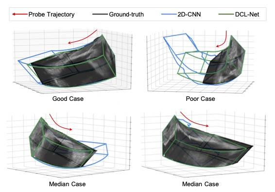

|
Hengtao Guo Google Scholar / LinkedIn / Research Gate / Github I am a Machine Learning Software Engineer at Google, where I focus on building recommendation systems in YouTube main app. Before joining Google, I have worked as a Research Intern at UII America. I received my Ph.D. in Biomedical Engineering from Rensselaer Polytechnic Institute in 2022, and B.S. in Computer Science from Wuhan University in 2018. |
{kind=link}
Research FieldsMy research focuses span across machine learning, deep learning, and generative artificial intelligence:
|
Publications |

|
SMPL-A: Modeling Person-Specific Deformable Anatomy
Hengtao Guo, Benjamin Planche, Meng Zheng, Srikrishna Karanam, Terrence Chen, Ziyan Wu IEEE/CVF Conference on Computer Vision and Pattern Recognition (CVPR), 2022 Introducing a learning-based method that uses medical scans to predict internal organ deformation across various human poses, aiding radiotherapy and similar treatments. This approach builds a patient-specific model encoding the organ's shape and elasticity, allowing for deformation estimation based on the patient's current pose. This innovation offers clinicians precise guidance without additional scans or procedures. poster |
|

|
Sensorless Freehand 3D Ultrasound Reconstruction via Deep Contextual
Learning
Hengtao Guo, Sheng Xu, Bradford J. Wood, Pingkun Yan Medical Image Computing and Computer Assisted Intervention (MICCAI), 2020 Proposing a deep contextual learning network (DCL-Net), which can efficiently exploit the image feature relationship between US frames and reconstruct 3D US volumes without any tracking device. The proposed DCL-Net utilizes 3D convolutions over a US video segment for feature extraction. An embedded self-attention module makes the network focus on the speckle-rich areas for better spatial movement prediction, with a novel case-wise correlation loss to stabilize the training process for improved accuracy. arxiv / code |